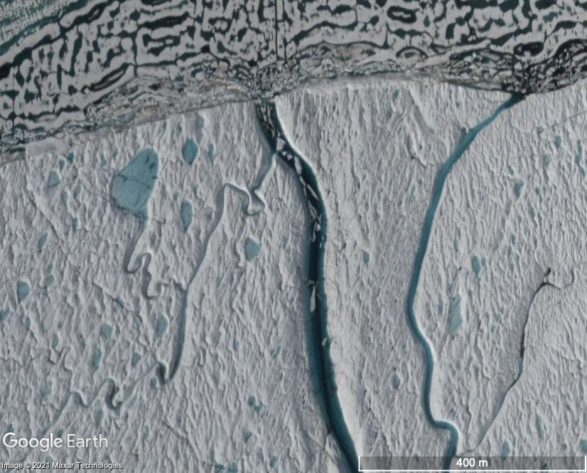

Earth’s ice sheets play an important role in regulating global climate and sea level. My research has focused on ice shelves and outlet glaciers found along the edges of Antarctica and Greenland. My most recent work builds on decades of study that has shown how ice shelves are vulnerable to surface melt ponds. I currently investigate the role that rivers play in ice-shelf stability using satellite images, aerial images, and ice-penetrating radar. As part of my graduate work, I discovered the first observed estuary on an ice shelf, which can be seen in Google Earth.
Rivers and estuaries
Nansen River, East Antarctica, water drained off the ice shelf in a waterfall
(Bell et al., 2017)
Petermann Estuary, northeast Greenland, water flow direction reverses, letting ocean water onto the surface of the ice.
Google Earth
Publications
Boghosian, A. L, L. H Pitcher, L. C. Smith, E. Kosh, P. M. Alexander, M. Tedesco, and R. E. Bell, Development of ice-shelf estuaries promotes fracture and calving, Nature Geoscience, in review.
Bell, R. E., W. Chu, J. Kingslake,
I. Das, M. Tedesco, K. J. Tinto, C. J. Zappa, M. Frezzotti, A. Boghosian, and W. S. Lee (2017), Antarctic ice shelf potentially stabilized by export of meltwater in surface river, Nature, 544(7650), 344-348, doi:10.1038/nature22048
Presentations
The Petermann Ice Shelf Estuary and its impact on ice-shelf stability (oral, Program for Arctic Regional Climate Assessment 2020 Meeting, Greenbelt, MD, Feb. 20, 2020).
Video
More Information
Past and present collaborators on this project include Lincoln Pitcher (CIRES), Larry Smith (Brown), Elena Kosh, Marco Tedesco (LDEO), Patrick Alexander (LDEO), Robin Bell (LDEO), Doug MacAyeal (UChicago), Mike Willis (CIRES), Ali Banwell (CIRES), Winnie
Chu (Georgia Tech), and Adam LeWinter (CRELL).
Publications
Boghosian, A. L, L. H Pitcher, L. C. Smith, E. Kosh, P. M. Alexander, M. Tedesco, and R. E. Bell, Development of ice-shelf estuaries promotes fracture and calving, Nature Geoscience, in review.
Bell, R. E., W. Chu, J. Kingslake,
I. Das, M. Tedesco, K. J. Tinto, C. J. Zappa, M. Frezzotti, A. Boghosian, and W. S. Lee (2017), Antarctic ice shelf potentially stabilized by export of meltwater in surface river, Nature, 544(7650), 344-348, doi:10.1038/nature22048
Presentations
The Petermann Ice Shelf Estuary and its impact on ice-shelf stability (oral, Program for Arctic Regional Climate Assessment 2020 Meeting, Greenbelt, MD, Feb. 20, 2020).
Video
More Information
Past and present collaborators on this project include Lincoln Pitcher (CIRES), Larry Smith (Brown), Elena Kosh, Marco Tedesco (LDEO), Patrick Alexander (LDEO), Robin Bell (LDEO), Doug MacAyeal (UChicago), Mike Willis (CIRES), Ali Banwell (CIRES), Winnie Chu (Georgia Tech), and Adam LeWinter (CRELL).
My work on ice shelves has included aerogeophysical fieldwork on the Ross Ice Shelf, Antarctica, where I was part of the ROSETTA-Ice field team in 2016. From this rich dataset that includes measurements of the ice surface, internal structure, and ocean
floor, among many other properties, I developed the first Augmented Reality application (to my knowledge) to explore ice-penetrating radar data and ice-surface lidar data. I am working on integrating Mixed Reality tools into our ice-sheet
data exploration and analysis.
My work on ice shelves has also included laboratory experiments on iceberg motion after ice-shelf collapse.
Antarctica Field Photos


Publications
Boghosian, A. L., M. Pratt, M. K. Becker, S. I. Cordero, T. Dhakal, J. Kingslake, C. D. Locke, K. J. Tinto, and R. E. Bell (2019), Inside the ice shelf: using augmented reality to visualize 3D lidar and radar data from Antarctica, The Photogrammetric
Record, doi:10.1111/phor.12298.
Tinto, K. J., et al. (2019), Ross Ice Shelf response to climate driven by the tectonic imprint on seafloor bathymetry, Nature Geoscience, doi:10.1038/s41561-019-0370-2. 8
Burton, J. C., J. M. Amundson, D. S. Abbot, A. Boghosian, L. M. Cathles, S. Correa-Legisos, K. N. Darnell, N. Guttenberg, D. M. Holland, and D. R. MacAyeal (2012), Laboratory investigations of iceberg capsize dynamics,
energy dissipation and tsunamigenesis, Journal of Geophysical Research: Earth Surface, 117(F1), doi:10.1029/2011jf002055.
More Information
Past and present collaborators on the AR work include Martin Pratt, Maya Becker, Isabel Cordero (LDEO), Caitlin Dieck Locke (LDEO), Tej Dhakal, Jonny Kingslake (Columbia, LDEO), Kirsty Tinto (LDEO), Robin Bell (LDEO), the ROSETTA-Ice field team, Steve
Feiner (Columbia), Carmine Elvezio (Columbia), Sofia Sanchez-Zarate (Columbia), Peter Richards, and Manxueying Lin (Columbia).
Publications
Boghosian, A. L., M. Pratt, M. K. Becker, S. I. Cordero, T. Dhakal, J. Kingslake, C. D. Locke, K. J. Tinto, and R. E. Bell (2019), Inside the ice shelf: using augmented reality to visualize 3D lidar and radar data from Antarctica, The Photogrammetric
Record, doi:10.1111/phor.12298.
Tinto, K. J., et al. (2019), Ross Ice Shelf response to climate driven by the tectonic imprint on seafloor bathymetry, Nature Geoscience, doi:10.1038/s41561-019-0370-2. 8
Burton, J. C., J. M. Amundson, D. S. Abbot, A. Boghosian, L. M. Cathles, S. Correa-Legisos, K. N. Darnell, N. Guttenberg, D. M. Holland, and D. R. MacAyeal (2012), Laboratory investigations of iceberg capsize dynamics,
energy dissipation and tsunamigenesis, Journal of Geophysical Research: Earth Surface, 117(F1), doi:10.1029/2011jf002055.
More Information
Past and present collaborators on the AR work include Martin Pratt, Maya Becker, Isabel Cordero (LDEO), Caitlin Dieck Locke (LDEO), Tej Dhakal, Jonny Kingslake (Columbia, LDEO), Kirsty Tinto (LDEO), Robin Bell (LDEO), the ROSETTA-Ice field team, Steve Feiner (Columbia), Carmine Elvezio (Columbia), Sofia Sanchez-Zarate (Columbia), Peter Richards, and Manxueying Lin (Columbia).
Outlet glaciers and ice shelves are sensitive to warming oceans. My work has focused on using airborne gravity, magnetics, radar and lidar data collected by NASA’s Operation IceBridge to model the ocean bathymetry of outlet glaciers in Greenland. I was also part of a separate field team collecting aerogeophysical data along the west coast of the Greenland Ice Sheet. The modeled bathymetry data were used to explore how bathymetry influences glacier dynamics in Greenland.
Bathymetry photos

(Boghosian et al. 2015)
(Porter et al. 2014)
Greenland Field Photos
Publications
Porter, D. F., K. J. Tinto, A. L. Boghosian, B. M. Csatho, R. E. Bell, and J. R. Cochran (2018), Identifying Spatial Variability in Greenland's Outlet Glacier Response to Ocean Heat, Frontiers in Earth Science, 6(90), doi:10.3389/feart.2018.00090.
Boghosian, A., K. Tinto, J. R. Cochran, D. Porter, S. Elieff, B. L. Burton, and R. E. Bell (2015), Resolving bathymetry from airborne gravity along Greenland fjords, Journal of Geophysical Research: Solid Earth, 120(12),
8516-8533, doi:10.1002/2015jb012129.
Porter, D. F., K. J. Tinto, A. Boghosian, J. R. Cochran, R. E. Bell, S. S. Manizade, and J. G. Sonntag (2014), Bathymetric control of tidewater glacier mass loss in northwest Greenland, Earth and Planetary Science
Letters, 401, 40-46, doi:10.1016/j.epsl.2014.05.058.
Publications
Porter, D. F., K. J. Tinto, A. L. Boghosian, B. M. Csatho, R. E. Bell, and J. R. Cochran (2018), Identifying Spatial Variability in Greenland's Outlet Glacier Response to Ocean Heat, Frontiers in Earth Science, 6(90), doi:10.3389/feart.2018.00090.
Boghosian, A., K. Tinto, J. R. Cochran, D. Porter, S. Elieff, B. L. Burton, and R. E. Bell (2015), Resolving bathymetry from airborne gravity along Greenland fjords, Journal of Geophysical Research: Solid Earth, 120(12),
8516-8533, doi:10.1002/2015jb012129.
Porter, D. F., K. J. Tinto, A. Boghosian, J. R. Cochran, R. E. Bell, S. S. Manizade, and J. G. Sonntag (2014), Bathymetric control of tidewater glacier mass loss in northwest Greenland, Earth and Planetary Science
Letters, 401, 40-46, doi:10.1016/j.epsl.2014.05.058.
Finally, I have explored new statistical tools methods of data analysis, including developing new methods to better analyze paleoclimate data.
Publications
Boswell, S. M., and A. L. Boghosian (2019), A New Method for the Spectral Analysis of Unevenly Sampled Time Series, paper presented at Soft Computing and Signal Processing, Springer Singapore, Singapore, 2019//.
Alexandra Boghoßßsian, Jed Dougherty, Eurry Kim, Albert Lee, Adam Obeng, Kaz Sakamoto, “The Students Speak”, Doing Data Science Ed. Rachel Schutt, Cathy O’Neil, (pp. 337-345). Sebastopol, CA: O’Reilly Media, 2013.
Publications
Boswell, S. M., and A. L. Boghosian (2019), A New Method for the Spectral Analysis of Unevenly Sampled Time Series, paper presented at Soft Computing and Signal Processing, Springer Singapore, Singapore, 2019//.
Alexandra Boghoßßsian, Jed Dougherty, Eurry Kim, Albert Lee, Adam Obeng, Kaz Sakamoto, “The Students Speak”, Doing Data Science Ed. Rachel Schutt, Cathy O’Neil, (pp. 337-345). Sebastopol, CA: O’Reilly Media, 2013.